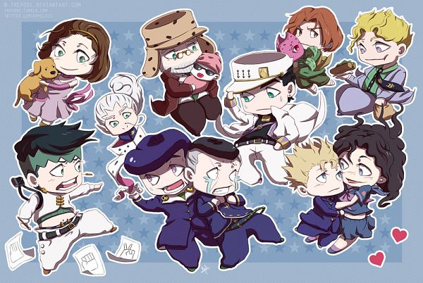

The town's population itself currently sits at just under 59,000, with its residents hard at work and friendly towards both fellow townsfolk and tourists alike. Most of its population grows due to tourism itself, with the majority of its income coming from those tourists themselves.
Summer is typically the best place to visit if you're ever thinking about it, as July 1st is the day that rivers and beaches open to the public in Morioh.